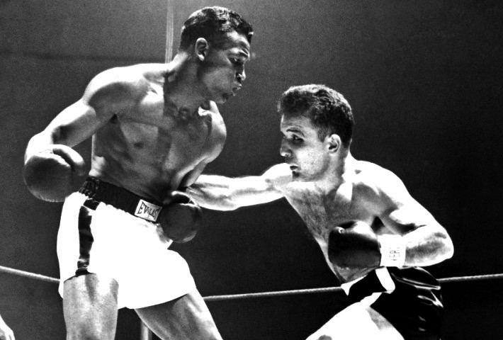

Sugar Ray Robinson, born in 1921 in Ailey, Georgia, began his professional boxing career in 1940 at the age of 19.
His exceptional skill and versatility made him a dominant figure in the welterweight and middleweight divisions.
Robinson’s boxing debut was the first step towards becoming one of the greatest pound-for-pound boxers of all
time.
Best Fights: Defining Moments
1951 - Sugar Ray Robinson vs. Jake LaMotta (Sixth Fight)
One of Robinson's most iconic victories was his sixth fight against Jake LaMotta in 1951. Known as the "St.
Valentine's Day Massacre," Robinson defeated LaMotta in a brutal 13-round fight, cementing his legacy as the best
pound-for-pound fighter in the world.

1952 - Sugar Ray Robinson vs. Gene Fullmer
In their 1952 match, Robinson faced Gene Fullmer, one of the toughest competitors in the middleweight division.
Despite being knocked down in the first round, Robinson displayed his resilience and skill, ultimately winning by
a knockout in the fifth round.
Achievements: A True Legend
Sugar Ray Robinson is often hailed as one of the greatest boxers in history. His accomplishments include winning
world titles in two weight classes and maintaining a dominant career throughout the 1940s and 1950s.
Five-time World Champion in two weight classes (Welterweight and Middleweight)
Named Fighter of the Year by Ring Magazine in 1951
Considered the greatest pound-for-pound boxer of all time
Inducted into the Boxing Hall of Fame in 1967
Struggles: Challenges in and out of the Ring
Despite his greatness, Robinson faced several struggles throughout his career. His most significant challenge came
in the late 1950s when his skills began to decline. His attempt to regain the world middleweight title in his
later years was marked by tough defeats, including a loss to Gene Fullmer in 1957. Robinson also struggled with
personal issues outside the ring, including financial troubles and a rocky post-retirement period.